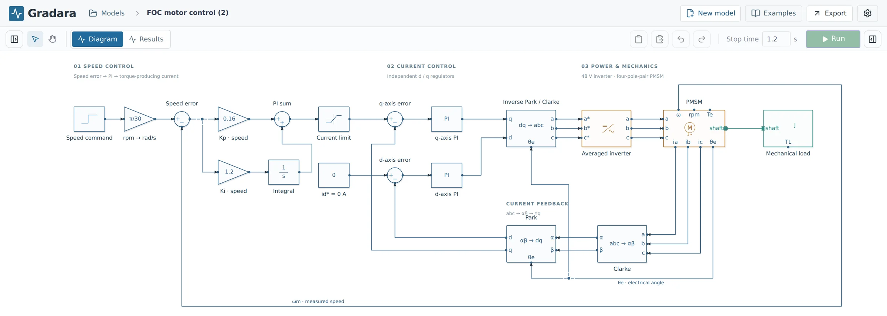

Orthogonal wiring
Snapping, branching onto existing wires, junctions, named nets, segment editing, and undo for every gesture.
Gradara is a graphical workbench for electrical, mechanical, thermal, and control models. Wire a diagram, set parameters, and run it with the OpenModelica solver on your own computer.
Free · Windows, macOS, Linux · Apache-2.0 · Early release

Physical connections follow conservation laws, so a circuit behaves like a circuit and a shaft carries torque. Signals and physics meet through explicit sensors and actuators.
Sources, math, transfer functions, discrete and sampled blocks, PI and PID, transforms.
causal · scalarSources, passives, diodes, ideal switches, sensors, averaged inverters, and motors. Bridges and transformers through AI-generated blocks.
v · iInertias, loads, damping, and speed and torque sensors coupled to machines.
φ · τLumped thermal and cooling models with AI-generated heat capacity, conduction, and loss blocks, as in the data center example.
T · Q̇Direct manipulation stays fast, and the numerical work goes to a proven Modelica compiler and solver. Your models are plain files on your computer.
Snapping, branching onto existing wires, junctions, named nets, segment editing, and undo for every gesture.
Models compile to Modelica and run with OpenModelica 1.27 and the Modelica Standard Library 4.1.0, including events and stiff systems.
Plot any logged net or output, zoom into switching ripple, keep event pairs, and download the full CSV.
DC motor speed control, servo position control with C export, field-oriented control, a synchronous buck, a 480 VAC flyback, and data center cooling.
Read and edit block equations, export Modelica source, and generate compile-checked C11 for a controller block.
Everything runs on your computer. No account needed to model or simulate, and no analytics or tracking.
When the library does not have what you need, describe it. Gradara writes the equations, checks them with the compiler, and places a block you can inspect and edit. It can also build a complete first model from a description, propose checked edits to the model you have open, and explain why a run failed. Nothing changes until you review and apply it.
Choose signal, electrical, mechanical, thermal, or multidomain, and say what it should do.
The AI returns a structured definition with real ports and parameters, never free-form code.
Schema validation and the OpenModelica compiler run before anything reaches your diagram. One automatic repair if needed.
The block is saved in your model and your local library. Reuse and simulate it without calling AI again.
Illustrative request. Results depend on the description and the chosen block type.
Buy prepaid credits inside the app when you need them, or use your own AI account. No subscription and no card on file.
The complete workbench, forever.
Sign in and go. No keys or setup.
For regular use across projects.
Gradara is local first. Nothing leaves your computer unless you ask for an AI feature. Read the privacy notice.
Gradara AI processes requests in memory. Prompts, models, equations, and responses are never stored or logged.
Only your email, credit balance, purchases, and per-request usage (task, model, token counts, time), with usage records deleted after about 13 months.
Your own API keys and your sign-in live in the operating system keychain and go only to their provider.
Delete your Gradara AI account from Settings. Your local models are never affected.
On first launch, Gradara walks you through a one-time simulation engine setup for your platform.
Windows 10 or 11, 64-bit. Gradara guides you to install OpenModelica, then adds its component library.
Installer · x64Apple silicon or Intel. Simulations run in a lightweight container with OrbStack, Docker Desktop, or Colima.
Disk image · .dmg64-bit Linux. Uses OpenModelica's packages, or Docker if you prefer containers.
AppImage · Debian and UbuntuPrefer to build it yourself? Clone the repository and follow the setup guide. Release notes are on GitHub Releases.
Yes. The app is open source under Apache-2.0 and every modeling and simulation feature is free. Only the optional hosted AI uses paid credits, and you can use your own AI account instead.
Not on Windows or Linux, where Gradara uses an installed OpenModelica. On macOS, OpenModelica does not publish native builds, so Gradara runs it in a lightweight container through OrbStack, Docker Desktop, or Colima.
No. Gradara is an independent tool with its own model format and exports standard Modelica source. MATLAB and Simulink files are not supported.
Only when you use an AI feature, and only the context that request needs. Gradara AI never stores it. Simulation always runs locally.
Every block passes schema checks and the OpenModelica compiler before it appears, and its equations are visible and editable. Compiling is not the same as being physically correct, so review blocks the way you would review any model.
Gradara is developed by Virtu Services LLC, with contributions from the open-source community.
Open the DC motor or the buck converter, press Run, and explore the results.